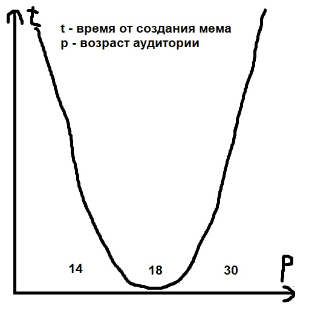

Дрейф мемов
Дрейф мемов - процесс перемещения тренда на определённый мем среди людей различных возрастов. Дело в том, что этот процесс связан не только с мемами, а с любой молодёжной тенденцией в современном обществе. Саму динамику можно представить в виде простого графика: Как видно из графика, тренды мемов движутся по возрастным группам нелинейно.